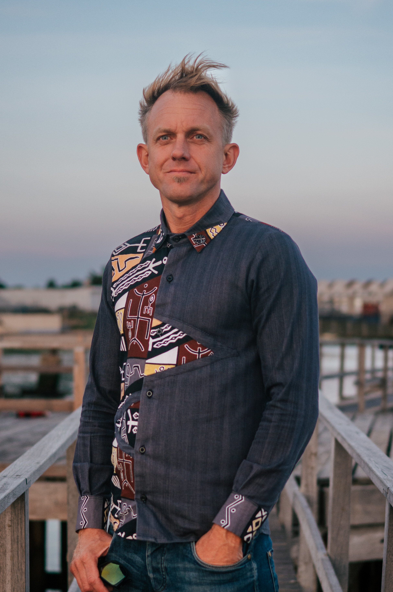

I did not grow up in a Christian home, so I never had a biblical worldview, but my family were very loving and supportive.
As a young man, I gravitated towards drink and drugs. A local guy I knew, who used to take drugs, had stopped and become a Christian. He had completely changed, and his life was transformed.
Some years later, I found myself in some difficult situations and cried out to God. I believe He heard my cry, as the next day I had a newfound strength and conviction to say no to spliffs and pills.
I moved into a house with one of my band members, and some of the guys there were Christians. This led to me hearing more about faith and eventually praying a prayer to invite Jesus into my life. In the months that followed, I saw God working in my life in powerful ways.
